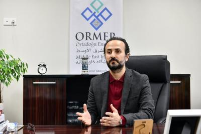

Kadromuz
Profesör Tuncay Kardaş


Sakarya Üniversitesi Ortadoğu Enstitüsü Müdürüdür. Uluslararası Siyaset profesörü olan Kardaş, Bilkent Üniversitesi'nden Lisans ve Yüksek Lisans, Galler Üniversitesi, Aberystwyth'ten de MsEcon (Security Studies) ve Doktora (International Politics) dereceleri almıştır. Eleştirel Güvenlik Çalışmaları, Savaş Sosyolojisi, Uluslararası İlişkiler Teorisi ve Görsel Semiotik alanlarında araştırmalar yapmaktadır. Türkiye ve Ortadoğu'da Toplumsal Güvenlik İkilemleri' isimli proje çalışmasının koordinatörlüğünü yapmıştır. Halen 'History through Theory' isimli projeyi yürütmektedir.
Profesör Kardaş'ın çalışmaları International Politics, War in History, Cambridge Review of International Affairs, Digest of Middle East Studies, Turkish Studies, Middle East Critique ve Insight Turkey gibi akademik dergilerde yayınlanmıştır. Kardaş şu kitapların yazarlarındandır: The Borders of Islam: Exploring Samuel Huntington's Faultlines, from Al-Andalus to Virtual Ummah, (New York: Oxford University Press, 2009); Non-State Armed Actors in the Middle East (New York: Palgrave, 2017) ve 'İmparatorluğun Savaş Kararı: Osmanlı Devleti Birinci Dünya Savaşına Neden Girdi, (Ankara: Kadim 2019)
Tel:(+90)264 2953615
e-mail: kardas@sakarya.edu.tr
Yayınlar
Hakemli Dergilerde Makaleler
- (2023) Balcı A., Kardaş T., "The Ottoman International System: Power Projection, Interconnectedness, and the Autonomy of Frontier Polities", Millennium: Journal of International Studies, Vol 51/3,. (SSCI)
- (2022b) Balci A., Kardaş T., Turan Y., Ediz İ. "When Doves Feed Hawks: Ottoman War Decision and European Powers Towards the Crimean War", Alternatives,DOI, (SSCI)
- (2022a)Yeşiltaş, M., Kardaş, T. & Jacoby, T., 'Rethinking non-state armed actors and sovereignty', International Politics, DOI, (SSCI)
- (2021) Yeşiltaş, M., & Kardaş, T., 'Mimicry and substitution in the logic of sovereignty: the case of PYD' International Politics, 1-20, (SSCI).
- (2020) Ceylan, T. E., & Kardaş, T. (2020). Kimlik-Güvenlik İlişkisini Anlamak: Toplumsal Kimlik, Sosyal Psikoloji ve Toplumlar-Arası Güvenlik İkilemi. Bilig, (94), 189-215. (SSCI)
- (2019) Understanding the July 2016 Coup: The Contemporary Security Dilermma in Turkey, Digest of Middle Eastern Studies Vol. 28, No. 1 (with Ali Balci) (ESCI)
- (2018) War Decision and Neoclassical Realism: The Ottoman Entry into the First World War, War in Historyhttps://doi.org/10.1177/0968344518789707 (with Ali Balcı, İsmail Ediz, Yıldırım Turan) (SSCI)
- (2017a) 'Rethinking Kurdish Geopolitical Space', Cambridge Review of Internaitonal Affairs, Vol. 30, No. 3 (with Murat Yesiltas) (SSCI)
- (2017b) 'Trump and the Media-Industrial Complex in US Politics', Insight TurkeyVol. 19, No. 2 (Web of Science)
- (2016a) 'Inter-Societal Security Trilemma in Turkey: Understanding the Failure of the 2009 Kurdish Opening' Turkish Studies, Vol. 17 No. 1 (with Ali Balci) (SSCI)
- (2016b) 'Interview with Former Foreign Minister of Tunisia', Turkish Journal of Middle Eastern Studies, Vol. 3, No. 2
- (2015) 'The New Middle East, ISIL and the 6th Revolt Against the West' Insight Turkey, Vol. 17 No. 3 (with Murat Yesiltas)
- (2013a) 'Türkiyenin İsrail ile İlişkilerinin Değişen Dinamikleri: Bir 'Güvenlikleştirme Analizi Ortadoğu Yıllığı2012, İstanbul: Açılım (with Ali Balci)
- (2013b) 'Gezi Direnişi ve Türkiye'nin Toplumlararası Güvenlik İkilemi, Birikim, Haziran.
- (2012a) 'No Laughing Matter: Visualizing Turkey's Ergenekon in Political Cartoons', Middle East Critique, Volume 21, Issue 2, 2012
- (2012b) 'The Changing Dynamics of Turkey's Relations with Israel: An Analysis of 'Securitization'', Insight Turkey, Volume 14, No. 2 (with Ali Balci)
- (2012c), 'Bir Dış Politika Aracı Olarak TİKA' Akademik Arastirmalar Dergisi Vol. 7 No. 1 (with Ramazan Erdağ)
- (2011a) 'The Impact of Changing Islamic Identity on Turkeys New Foreign Policy', Alternatives: Turkish Journal of International Relations, Vol. 10, No. 2 (with Martina Warning)
- (2011b) 'The New Turkish Foreign Policy: Towards an Understanding', Bilgi, Vol. 22, No.2 (with Murat Yesiltaş)
- (2008) 'The Return of the Liberal Sensibility in Europe, Economics and Management, Vol. 4, No: 3 (with Murat Yesiltaş and Yildirim Turan)
- (2006) 'New Perspectives in Security Studies', Bilgi Vol. 13 No:2.
- (2006) 'Türkiye-İsrail İlişkilerinin 'Analiz Düzeyi Kapsamında Değerlendirilmesi: 1996-2006' Ortadoğu Yıllığı 2005, İstanbul: Nobel.
Uluslararası Kitap
- (2017) Non-state Armed Actors in the Middle East, New York: Palgrave (with Murat Yesiltas)
- (2009) The Borders of Islam: Exploring Samuel Huntington's Faultlines, from Al-Andalus to Virtual Ummah, New York: Oxford University Press (with Stig Jarle Hansen and Atle Mesoy)
Uluslararası Kitap Bölümleri
- (2020) Tuncay Kardaş, Understanding Security in the Middle East in R. Erdag and M. Yetim (eds) The Middle East and North Africa Eskişehir: Anadolu Üniversitesi Yayınları.
- (2017a) 'The Phenomenon of Non-State Armed Actors and Violent Geopolitics in the Middle East' in Murat Yesiltas and Tuncay (eds) Non-state Armed Actors in the Middle East New York: Palgrave (with Murat Yesiltas)
- (2017b) Global Politics of Image and the Making of a Legitimate Non-state Armed Actor: Syrian Kurds and 'the Secular West' in Kobane in Murat Yesiltas and Tuncay Kardas (eds) Non-state Armed Actors in the Middle East New York: Palgrave (with Murat Yesiltas) (with Murat Yesiltas)
- (2017c) 'Making of Foreign Fighters in the Middle East: Identity, Social Media and Virtual Radicalization' in Murat Yesiltas and Tuncay Kardas (eds) Non-state Armed Actors in the Middle EastNew York: Palgrave (with Omer B. Ozdemir )
- (2009) 'Turkey: Secularism, Islam and EU', in Tuncay Kardas, Stig Jarle Hansen and Atle Mesoy (eds.), The Borders of Islam: Exploring Samuel Huntington's Faultlines from Al-Andalus to Virtual Ummah, New York: Oxford University Press
- (2009), 'Huntington and Islam's Bloody Borders in Stig Jarle Hansen, Atle Mesoy and Tuncay Kardas (eds) The Borders of Islam: Exploring Samuel Huntington's Faultlines, from Al-Andalus to Virtual Ummah, New York: Oxford University Press (with Stig Jarle Hansen and Atle Mesoy)
Ulusal Kitap
- (2019) İmparatorluğun Savaş Kararı: Osmanlı Devleti Birinci Dünya Savaşına Neden Girdi, Ankara: Kadim (Ali Balcı İsmail Ediz ve Yıldırım Turan ile birlikte)
Ulusal Kitap Bölümü
- (2014) 'Post-yapısalcılık ve Uluslararası İlişkiler' icinde Uluslararası İlişkiler Teorileri, Ramazan Gözen (der) (Ramazan Erdağ ile) İstanbul: İletişim.
- (2014) 'Realizm' Uluslararası İlişkilere Giriş icinde, Şaban Kardaş ve Ali Balcı (der), İstanbul: Küre (Ali Balcı ile)
- (2013) 'Türk Dış Politikası ve Stratejik Kültür', Türk Dış Politikası Yıllığı 2012, Ankara: Seta. (Ramazan Erdağ ile)
- (2014) 'Güvenlik' Uluslararası İlişkilere Giriş Uluslararası İlişkilere Giriş icinde, Şaban Kardaş ve Ali Balcı (der), İstanbul: Küre.
- (2007) 'Güvenlik: Kimin Güvenliği ve Nasıl?' Uluslararası Politikayı Anlamak: Ulus-Devletten Küreselleşmeye icinde Zeynep Dağı (der), İstanbul: Alfa.
Gazete Yazılarından Seçmeler
-
Söyleşi: Sakarya Üniversitesi Ortadoğu Enstitüsü Müdürü Prof. Dr. Tuncay Kardaş "Biden'ın Ekibi, Türkiye'ye Karşı İdeolojik, Bürokratik ve Örgütsel Refleksler Gösterebilir"; Kriter, Şubat 2021, https://kriterdergi.com/soylesi/sakarya-universitesi-ortadogu-enstitusu-muduru-prof-dr-tuncay-kardas-bidenin-ekibi-turkiyeye-karsi-ideolojik-ve-orgutsel-refleksler-goster
-
Trump: Imkansiz Zaferin Anatomisi, Al Jazeera Turk, 25 Ocak 2017, http://www.aljazeera.com.tr/gorus/trump-imkansiz-zaferin-anatomisi
- Trump'ın dili: siyasal bir anahtar, Al-Jazeera Turk, 7 Mart 2017,http://www.aljazeera.com.tr/gorus/trumpin-dili-siyasal-bir-anahtar
- Türkiye-ABD İlişkilerinde Gerçekçi Olmanın İmkanı, Kriter, Eylul 2016,http://kriterdergi.com/turkiye-abd-iliskilerinde-gercekci-olmanin-imkani/
- Tuncay Kardas and Ali Balci 'Why does the West love the Gülen movement so much? https://www.middleeastmonitor.com/20160729-why-does-the-west-love-the-gulen-movement-so-much/
- Tuncay Kardas ve Ali Balcı 'Popüler Antagonizma Star Görüş, 24 Ağustos 2013, http://haber.stargazete.com/acikgorus/populer-antagonizma/haber-78355
- Tuncay Kardaş, 'Militarist Liberalizm, Milliyet, 24 Eylül 2013,http://gundem.milliyet.com.tr/militarist-liberalizm/gundem/ydetay/1767560/default.htm
Konferans Organizasyon Komitesi
- 5th International EuPRA Conference, "Challenges of Peace and Democracy in Europe" (2006 -2007). (http://www.eupra.sakarya.edu.tr/).
- Kriz ve Kritik Konfernasları (http://www.krizkritik.sakarya.edu.tr/).
- Ortadoğu'da Toplum ve Siyaset Kongreleri
Dergi Yayın Kurulu Üyeliği
- Ortadogu Yıllığı (http://ortadoguyilligi.com/); 2011den günümüze.
Akademik Ödüller
- EU-Jean Monet Bursu 2000-2001
- YÖK Yurt Dışı Doktora Bursu 2001-2006
Projeler
- ISSDIT: Inter-Societal Security Dilemmas in Turkey, Uluslararası İlişkeler, Sakarya Universitesi
- ISDIME: Inter-Societal Security Dilemmas in the Middle East, Marmara Üniversitesi Ortadoğu Enstitüsü
- History Through Theory